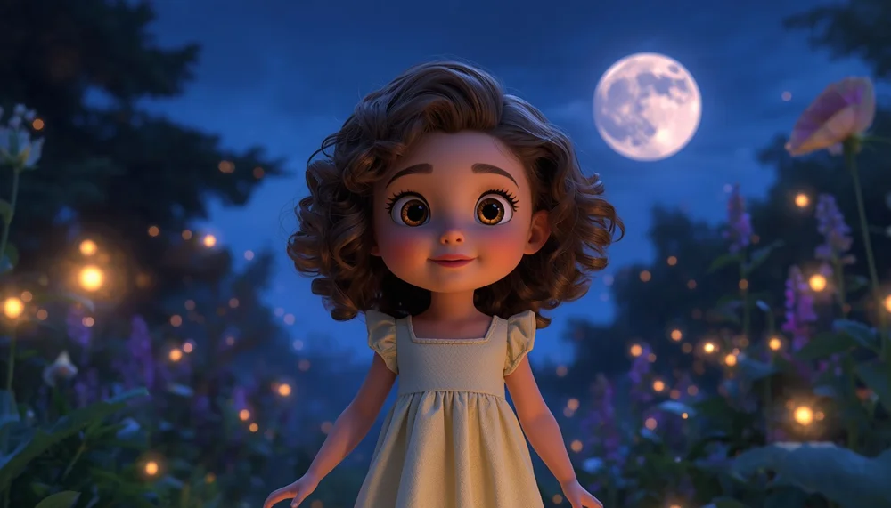
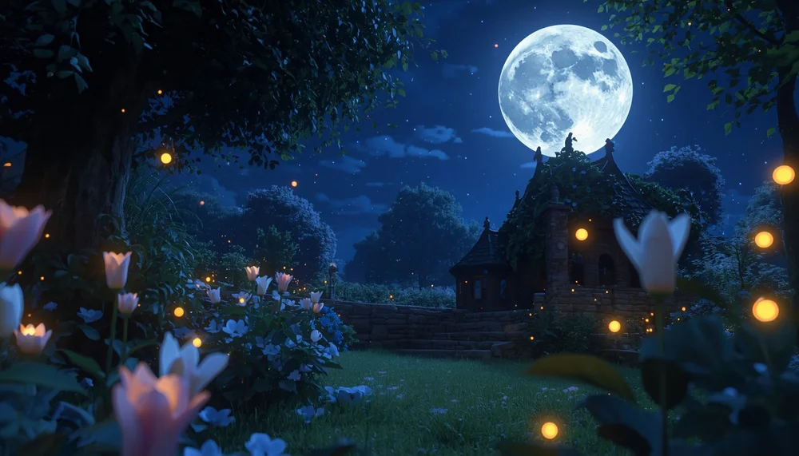

El Jardín de los Susurros
Ya es de noche. La luna ha salido, grande y redonda, y una niña con su camisón amarillo ha salido al jardín. Alrededor hay flores altas y luciérnagas que brillan despacito, como farolitos pequeños. Ponte cómoda, cómodo, cierra los ojos y entra con ella en el jardín. Aquí no hay prisa. Aquí solo se susurra.

La niña se sienta entre las flores, cierra los ojos y sonríe tranquila. Haz como ella. Respira despacio… una vez… dos veces… tres. Nota cómo el aire entra fresquito y sale despacito. Las flores, al oírte respirar así, se mueven un poquito, como si también respiraran contigo.
¿Lo oyes? Las flores se inclinan hacia la niña y le susurran. No gritan, no hablan alto: susurran, como se habla cuando alguien está a punto de dormirse. La niña las escucha con los ojos muy abiertos, maravillada. Cada flor le cuenta un secreto pequeño del día: que el sol las calentó, que la lluvia las regó, que una abeja les contó un chiste.
Una flor, más brillante que las demás, se acerca a su oreja. La niña la coge con cuidado, la acerca y escucha. La flor le susurra su secreto, solo para ella: que esta noche, cuando te duermas, las flores guardarán tus sueños bonitos entre sus pétalos, para que no se escapen. La niña sonríe. Ya sabe el secreto, y ahora tú también lo sabes.
La niña tiene sueño. Se tumba sobre una mantita suave, entre las flores, y una flor grande le pone un pétalo encima, como si fuera una manta. Las estrellas ya están arriba, y las luciérnagas se quedan de guardia, brillando muy bajito para no despertarla. Respira una última vez… suelta el aire… y deja que el sueño te lleve de la mano.

Y el jardín se queda en silencio bajo la luna. Las flores ya están cerradas, dormidas, y las luciérnagas brillan despacito. Buenas noches, pequeña, pequeño. El jardín de los susurros se queda aquí, cuidando tus sueños hasta mañana.